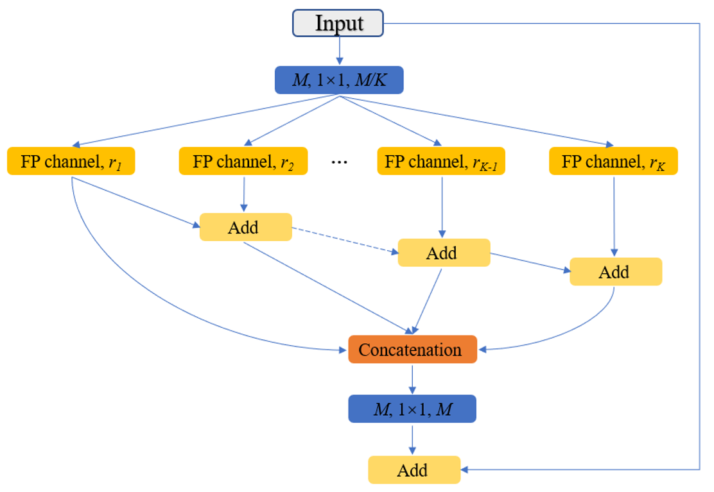
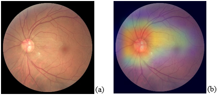

Ph.D. received from the George Washington University (GWU), advised by Murray H. Loew. Primary research interests: image processing, machine learning, deep learning, and their applications in medical imaging. Recent researches: in silico medical AI, image segmentation synthesis, data separability measure, and learnability for deep learning models (transparent deep learning). Previous studies: deep learning applications on medical images (BME program at GWU), hyperspectral images-based cardiac ablation lesion detection (BME program at GWU), and non-destructive testing of wood composite panel internal defect (Biophysics program at Northeast Forestry University, China).
"You the wise, tell me, why should our days leave us, never to return?" - Ziqing Zhu
Recent Projects & Publications
Medical AI/ML
×
Restorable synthesis: average synthetic segmentation converges to a polygon approximation of an object contour in medical images Shuyue Guan, Ravi K. Samala, Seyed M. M. Kahaki, Weijie Chen Accepted by IEEE Southwest Symposium on Image Analysis and Interpretation (SSIAI), 2024
[Paper] [PDF]
Synthesis of segmentation contours is useful in evaluating truthing methods, i.e., the establishment of a segmentation reference standard by combining multiple segmentation results (e.g., by multiple experts). In contrast to a real-world application where the ground truth is often not available, the ground truth of objects is defined in synthetic data. Contours with combinations of segmentation errors, as compared to the defined ground truth, can be synthesized. A desired property of segmentation contour synthesis for evaluating truthing methods, which we call the restorability property, is that the average of multiple segmentation contours can converge to the truth contour. This property is desired because such a dataset can serve as a benchmark for evaluating if commonly used truthing methods have bias. We developed a segmentation contour synthesis tool that has the restorability property and conducted simulation studies to validate this tool.
×
The stochastic digital human is now enrolling for in silico imaging trials – Methods and tools for generating digital cohorts
Aldo Badano, MIguel Lago, Elena Sizikova, Jana Delfino, Shuyue Guan, Mark A Anastasio,
Berkman Sahiner
Progress in Biomedical Engineering, 2023
[Paper]
Randomized clinical trials, while often viewed as the highest evidentiary bar by which to judge the quality of a medical intervention, are far from perfect. In silico imaging trials are computational studies that seek to ascertain the performance of a medical device by collecting this information entirely via computer simulations. The benefits of in silico trials for evaluating new technology include significant resource and time savings, minimization of subject risk, the ability to study devices that are not achievable in the physical world, allow for the rapid and effective investigation of new technologies and ensure representation from all relevant subgroups. To conduct in silico trials, digital representations of humans are needed. We review the latest developments in methods and tools for obtaining digital humans for in silico imaging studies. First, we introduce terminology and a classification of digital human models. Second, we survey available methodologies for generating digital humans with healthy status and for generating diseased cases and discuss briefly the role of augmentation methods. Finally, we discuss approaches for sampling digital cohorts and understanding the trade-offs and potential for study bias associated with selecting specific patient distributions.
×
MISS-tool: medical image segmentation synthesis tool to emulate segmentation errors Shuyue Guan, Ravi K Samala, Arian Arab, Weijie Chen
SPIE Medical Imaging: Computer-Aided Diagnosis, 2023
[Paper] [PDF]
Segmentation of medical images with known ground truth is useful for investigating properties of performance metrics and comparing different approaches of combining multiple manual segmentations to establish a reference standard, thereby informing selection of performance metrics and truthing methods. For medical images, however, segmentation ground truth is typically not available. One way of synthesizing segmentation errors is to use regular geometric objects as ground truth, but they lack the complexity and variability of real anatomical objects. To address this problem, we developed a medical image segmentation synthesis (MISS)-tool. The MISS-tool emulates segmentations by adjusting truth masks of anatomical objects extracted from real medical images. We categorized six types of segmentation errors and developed contour transformation tools with a set of user-adjustable parameters to modify the defined truth contours to emulate different types of segmentation errors, thereby generating synthetic segmentations. In a simulation study, we synthesized multiple segmentations to emulate algorithms or observers with pre-defined sets of segmentation errors (e.g., under/over-segmentation) using 220 lung nodule cases from the LIDC lung computed tomography dataset. We verified that the synthetic segmentation results manifest the type of errors that are consistent with our pre-configured setting. Our tool is useful for synthesizing a range of segmentation errors within a clinical segmentation task.
×
Effect of color-normalization on deep learning segmentation models for tumor-infiltrating lymphocytes scoring using breast cancer histopathology images
Arian Arab, Victor Garcia, Shuyue Guan, Brandon D Gallas, Berkman Sahiner, Nicholas Petrick, Weijie Chen
SPIE Medical Imaging: Digital and Computational Pathology, 2023
[Paper] [PDF]
Studies have shown that the increased presence of tumor-infiltrating lymphocytes (TILs) is associated with better long-term clinical outcomes and survival, which makes TILs a potentially useful quantitative biomarker. In clinics, pathologists’ visual assessment of TILs in biopsies and surgical resections result in a quantitative score (TILs-score). The Tumor-infiltrating lymphocytes in breast cancer (TiGER) challenge is the first public challenge on automated TILs-scoring algorithms using whole slide images of hematoxylin and eosin-stained (H&E) slides of human epidermal growth factor receptor-2 positive (HER2+) and triple-negative breast cancer (TNBC) patients. We participated in the TiGER challenge and developed algorithms for tumor-stroma segmentation, TILs cell detection, and TILs-scoring. The whole slide images in this challenge are from three sources, each with apparent color variations. We hypothesized that color-normalization may improve the cross-source generalizability of our deep learning models. Here, we expand our initial work by implementing a color-normalization technique and investigate its effect on the performance of our segmentation model. We compare the segmentation performance before and after color-normalization by cross validating the models on the three datasets. Our results show a substantial increase in the performance of the segmentation model after color-normalization when trained and tested on different sources. This might potentially improve the model’s generalizability and robustness when applied to the external sequestered test set from the TiGER challenge.
×
Informing selection of performance metrics for medical image segmentation evaluation using configurable synthetic errors Shuyue Guan, Ravi K. Samala, Weijie Chen
IEEE Applied Imagery Pattern Recognition (AIPR), 2022
[Paper] [Arxiv]
Machine learning-based segmentation in medical imaging is widely used in clinical applications from diagnostics to radiotherapy treatment planning. Segmented medical images with ground truth are useful for investigating the properties of different segmentation performance metrics to inform metric selection. Regular geometrical shapes are often used to synthesize segmentation errors and illustrate properties of performance metrics, but they lack the complexity of anatomical variations in real images. In this study, we present a tool to emulate segmentations by adjusting the reference (truth) masks of anatomical objects extracted from real medical images. Our tool is designed to modify the defined truth contours and emulate different types of segmentation errors with a set of user-configurable parameters. We defined the ground truth objects from 230 patient images in the Glioma Image Segmentation for Radiotherapy (GLIS-RT) database. For each object, we used our segmentation synthesis tool to synthesize 10 versions of segmentation (i.e., 10 simulated segmentors or algorithms), where each version has a pre-defined combination of segmentation errors. We then applied 20 performance metrics to evaluate all synthetic segmentations. We demonstrated the properties of these metrics, including their ability to capture specific types of segmentation errors. By analyzing the intrinsic properties of these metrics and categorizing the segmentation errors, we are working toward the goal of developing a decision-tree tool for assisting in the selection of segmentation performance metrics.
Transparent Deep Learning
×
The training accuracy of two-layer neural networks: its estimation and understanding using random datasets Shuyue Guan, Murray Loew
IEEE Applied Imagery Pattern Recognition (AIPR), 2023
[Paper] [Arxiv]
Although the neural network (NN) technique plays a vital role in machine learning, understanding the mechanism of NN models and the transparency of deep learning still require more basic research. In this study, we propose a novel theory based on space partitioning to estimate the approximate training accuracy for two-layer neural networks on random datasets without training. There appear to be no other studies that have proposed a method to estimate training accuracy without using input data and/or trained models. Our method estimates the training accuracy for two-layer fully-connected neural networks on two-class random datasets using only three arguments: the dimensionality of inputs (d), the number of inputs (N), and the number of neurons in the hidden layer (L). We have verified our method using real training accuracies in our experiments. The results indicate that the method will work for any dimension, and the proposed theory could also extend to estimate deeper NN models. The main purpose of this paper is to understand the mechanism of NN models by the approach of estimating training accuracy but not to analyze their generalization nor their performance in real-world applications. This study may provide a starting point for a new way for researchers to make progress on the difficult problem of understanding deep learning.
×
[J] A Distance-based Separability Measure for Internal Cluster Validation Shuyue Guan, Murray Loew
International Journal on Artificial Intelligence Tools, 2022
[Paper] [Arxiv] [Code]
[C] An Internal Cluster Validity Index Using a Distance-based Separability Measure
International Conference on Tools with Artificial Intelligence (ICTAI), 2020
/Long Paper & Oral Presentation/ /Peer-review, Acceptance Rate: 26%/
[Paper] [Arxiv] [Video] [Code]
To evaluate clustering results is a significant part of cluster analysis. There are no true class labels for clustering in typical unsupervised learning. Thus, a number of internal evaluations, which use predicted labels and data, have been created. They are also named internal cluster validity indices (CVIs). Without true labels, to design an effective CVI is not simple because it is similar to create a clustering method. And, to have more CVIs is crucial because there is no universal CVI that can be used to measure all datasets, and no specific method for selecting a proper CVI for clusters without true labels. Therefore, to apply more CVIs to evaluate clustering results is necessary. In this paper, we propose a novel CVI - called Distance-based Separability Index (DSI), based on a data separability measure. We applied the DSI and eight other internal CVIs including early studies from Dunn (1974) to most recent studies CVDD (2019) as comparison. We used an external CVI as ground truth for clustering results of five clustering algorithms on 12 real and 97 synthetic datasets. Results show DSI is an effective, unique, and competitive CVI to other compared CVIs. In addition, we summarized the general process to evaluate CVIs and created a new method - rank difference - to compare the results of CVIs.
×
A Novel Intrinsic Measure of Data Separability Shuyue Guan, Murray Loew
Applied Intelligence, 2022
[Paper] [Arxiv] [Code]
In machine learning, the performance of a classifier depends on both the classifier model and the separability/complexity of datasets. To quantitatively measure the separability of datasets, in this study, we propose an intrinsic measure – the Distance-based Separability Index (DSI), which is independent of the classifier model. We then formally show that the DSI can indicate whether the distributions of datasets are identical for any dimensionality. DSI can measure separability of datasets because we consider the situation in which different classes of data are mixed in the same distribution to be the most difficult for classifiers to separate. And, DSI is verified to be an effective separability measure by comparing it to state-of-the-art separability/complexity measures using synthetic datasets and real datasets (CIFAR-10/100). Having demonstrated the DSI’s ability to compare distributions of samples, our other studies show that it can be used in other separability-based applications, such as measuring the performance of generative adversarial networks (GANs) and evaluating the results of clustering methods.
×
A Sneak Attack on Segmentation of Medical Images Using Deep Neural Network Classifiers Shuyue Guan, Murray Loew
IEEE Applied Imagery Pattern Recognition (AIPR), 2021
[Paper] [Arxiv]
Instead of using current deep-learning segmentation models (like the UNet and variants), we approach the segmentation problem using trained Convolutional Neural Network (CNN) classifiers, which automatically extract important features from classified targets for image classification. Those extracted features can be visualized and formed heatmaps using Gradient-weighted Class Activation Mapping (Grad-CAM). This study tested whether the heatmaps could be used to segment the classified targets. We also proposed an evaluation method for the heatmaps; that is, to re-train the CNN classifier using images filtered by heatmaps and examine its performance. We used the mean-Dice coefficient to evaluate segmentation results. Results from our experiments show that heatmaps can locate and segment partial tumor areas. But only use of the heatmaps from CNN classifiers may not be an optimal approach for segmentation. In addition, we have verified that the predictions of CNN classifiers mainly depend on tumor areas, and dark regions in Grad-CAM’s heatmaps also contribute to classification.
×
A Novel Measure to Evaluate Generative Adversarial Networks Based on Direct Analysis of Generated Images Shuyue Guan, Murray Loew
Neural Computing and Applications, 2021
[Paper] [Arxiv] [Code]
The Generative Adversarial Network (GAN) is a state-of-the-art technique in the field of deep learning. A number of recent papers address the theory and applications of GANs in various fields of image processing. Fewer studies, however, have directly evaluated GAN outputs. Those that have been conducted focused on using classification performance, e.g., Inception Score (IS) and statistical metrics, e.g., Fréchet Inception Distance (FID). Here, we consider a fundamental way to evaluate GANs by directly analyzing the images they generate, instead of using them as inputs to other classifiers. We characterize the performance of a GAN as an image generator according to three aspects: 1) Creativity: non-duplication of the real images. 2) Inheritance: generated images should have the same style, which retains key features of the real images. 3) Diversity: generated images are different from each other. A GAN should not generate a few different images repeatedly. Based on the three aspects of ideal GANs, we have designed the Likeness Score (LS) to evaluate GAN performance, and have applied it to evaluate several typical GANs. We compared our proposed measure with two commonly used GAN evaluation methods: IS and FID, and four additional measures. Furthermore, we discuss how these evaluations could help us deepen our understanding of GANs and improve their performance.
×
Understanding the Ability of Deep Neural Networks to Count Connected Components in Images Shuyue Guan, Murray Loew
IEEE Applied Imagery Pattern Recognition (AIPR), 2020
[Paper] [Arxiv]
Humans can count very fast by subitizing, but slow substantially as the number of objects increases. Previous studies have shown a trained deep neural network (DNN) detector can count the number of objects in an amount of time that increases slowly with the number of objects. Such a phenomenon suggests the subitizing ability of DNNs, and unlike humans, it works equally well for large numbers. Many existing studies have successfully applied DNNs to object counting, but few studies have studied the subitizing ability of DNNs and its interpretation. In this paper, we found DNNs do not have the ability to generally count connected components. We provided experiments to support our conclusions and explanations to understand the results and phenomena of these experiments. We proposed three ML-learnable characteristics to verify learnable problems for ML models, such as DNNs, and explain why DNNs work for specific counting problems but cannot generally count connected components.
×
Analysis of Generalizability of Deep Neural Networks Based on the Complexity of Decision Boundary Shuyue Guan, Murray Loew
International Conference on Machine Learning and Applications (ICMLA), 2020
/Full Paper & Oral Presentation/ /Double-blind Peer-review, Acceptance Rate: 25%/
[Paper] [Arxiv] [Video] [Code]
For supervised learning models, the analysis of generalization ability (generalizability) is vital because the generalizability expresses how well a model will perform on unseen data. Traditional generalization methods, such as the VC dimension, do not apply to deep neural network (DNN) models. Thus, new theories to explain the generalizability of DNNs are required. In this study, we hypothesize that the DNN with a simpler decision boundary has better generalizability by the law of parsimony (Occam's Razor). We create the decision boundary complexity (DBC) score to define and measure the complexity of decision boundary of DNNs. The idea of the DBC score is to generate data points (called adversarial examples) on or near the decision boundary. Our new approach then measures the complexity of the boundary using the entropy of eigenvalues of these data. The method works equally well for high-dimensional data. We use training data and the trained model to compute the DBC score. And, the ground truth for model's generalizability is its test accuracy. Experiments based on the DBC score have verified our hypothesis. The DBC is shown to provide an effective method to measure the complexity of a decision boundary and gives a quantitative measure of the generalizability of DNNs.
×
Evaluation of Generative Adversarial Network Performance Based on Direct Analysis of Generated Images Shuyue Guan, Murray Loew
IEEE Applied Imagery Pattern Recognition (AIPR), 2019
[Paper] [PDF]
Recently, a number of papers have addressed the theory and applications of the Generative Adversarial Network (GAN) in various fields of image processing. Fewer studies, however, have directly evaluated GAN outputs. Those that have been conducted focused on using classification performance and statistical metrics. In this paper, we consider a fundamental way to evaluate GANs by directly analyzing the images they generate, instead of using them as inputs to other classifiers. We consider an ideal GAN according to three aspects: 1) Creativity: non-duplication of the real images. 2) Inheritance: generated images should have the same style, which retains key features of the real images. 3) Diversity: generated images are different from each other. Based on the three aspects, we have designed the Creativity-Inheritance-Diversity (CID) index to evaluate GAN performance. We compared our proposed measures with three commonly used GAN evaluation methods: Inception Score (IS), Fréchet Inception Distance (FID) and 1-Nearest Neighbor classifier (1NNC). In addition, we discuss how the evaluation could help us deepen our understanding of GANs and improve their performance.
Deep Learning Applications on Medical Images

×
CFPNet-M: A Light-Weight Encoder-Decoder Based Network for Multimodal Biomedical Image Real-Time Segmentation
Ange Lou, Shuyue Guan, Murray Loew
Computers in Biology and Medicine, 2023
[Paper] [Arxiv] [Code]
Deep learning techniques are proving instrumental in identifying, classifying, and quantifying patterns in medical images. Segmentation is one of the important applications in medical image analysis. The U-Net has become the predominant deep-learning approach to medical image segmentation tasks. Existing U-Net based models have limitations in several respects, however, including: the requirement for millions of parameters in the U-Net, which consumes considerable computational resources and memory; the lack of global information; and incomplete segmentation in difficult cases. To remove some of those limitations, we built on our previous work and applied two modifications to improve the U-Net model: 1) we designed and added the dilated channel-wise CNN module and 2) we simplified the U-shape network. We then proposed a novel light-weight architecture, the Channel-wise Feature Pyramid Network for Medicine (CFPNet-M). To evaluate our method, we selected five datasets from different imaging modalities: thermography, electron microscopy, endoscopy, dermoscopy, and digital retinal images. We compared its performance with several models having a variety of complexities. We used the Tanimoto similarity instead of the Jaccard index for gray-level image comparisons. The CFPNet-M achieves segmentation results on all five medical datasets that are comparable to existing methods, yet require only 8.8 MB memory, and just 0.65 million parameters, which is about 2% of U-Net. Unlike other deep-learning segmentation methods, this new approach is suitable for real-time application: its inference speed can reach 80 frames per second when implemented on a single RTX 2070Ti GPU with an input image size of 256 × 192 pixels.
×
[J] CaraNet: Context Axial Reverse Attention Network for Segmentation of Small Medical Objects
Ange Lou, Shuyue Guan, Murray Loew
Journal of Medical Imaging (JMI), 2023
[Paper] [Arxiv] [Code]
[C] Ange Lou, Shuyue Guan, Hanseok Ko, Murray Loew
SPIE Medical Imaging, 2022
[Paper] [Arxiv] [Code]
Segmenting medical images accurately and reliably is important for disease diagnosis and treatment. It is a challenging task because of the wide variety of objects’ sizes, shapes, and scanning modalities. Recently, many convolutional neural networks (CNN) have been designed for segmentation tasks and achieved great success. Few studies, however, have fully considered the sizes of objects, and thus most demonstrate poor performance for small objects segmentation. This can have a significant impact on the early detection of diseases. This paper proposes a Context Axial Reserve Attention Network (CaraNet) to improve the segmentation performance on small objects compared with several recent state-of-the-art models. We test our CaraNet on brain tumor (BraTS 2018) and polyp (Kvasir-SEG, CVC-ColonDB, CVC-ClinicDB, CVC-300, and ETIS-LaribPolypDB) segmentation datasets. Our CaraNet achieves the top-rank mean Dice segmentation accuracy, and results show a distinct advantage of CaraNet in the segmentation of small medical objects.

×
Portable and Affordable Ophthalmic Disease Detection System
Teah Serani, Christina Kang, George Saab, Shuyue
Guan, Nathan H. Choe, Murray Loew
International Conference of the IEEE Engineering in Medicine and Biology Society (EMBC), 2021
(Paper ThDT1.16)
[PDF] [Video] [Code]
This study introduces an ophthalmic disease detection system that allows users to take a fundus image and detect common eye diseases using a smartphone. The detection is based on a convolutional neural network to classify the various retinal diseases by fundus images. The overall accuracy was 74%, and AUC was 0.93. Grad-CAM was generated to provide heatmaps with visual explanations of the prediction. Clinical Relevance — The results help promote worldwide eye
health, helping clinicians diagnose retinal diseases with confusing features more easily.
×
DC-UNet: Rethinking the U-Net Architecture with Dual Channel Efficient CNN for Medical Images Segmentation
Ange Lou, Shuyue Guan, Murray Loew
SPIE Medical Imaging, 2021
[Paper] [Arxiv] [Code]
Recently, deep learning has become much more popular in computer vision area. The Convolution Neural Network (CNN) has brought a breakthrough in images segmentation areas, especially, for medical images. In this regard, U-Net is the predominant approach to medical image segmentation task. The U-Net not only performs well in segmenting multimodal medical images generally, but also in some tough cases of them. However, we found that the classical U-Net architecture has limitation in several aspects. Therefore, we applied modifications: 1) designed efficient CNN architecture to replace encoder and decoder, 2) applied residual module to replace skip connection between encoder and decoder to improve based on the-state-of-the-art U-Net model. Following these modifications, we designed a novel architecture by adding Dual-Channel blocks in the U-Net model, called Dual Channel U-Net (DC-UNet), as a potential successor to the U-Net architecture. We created a new effective CNN architecture and build the DC-UNet based on this CNN. We have evaluated our model on three datasets with tough cases and have obtained a relative improvement in performance of 2.90%, 1.49% and 11.42% respectively compared with classical U-Net, especially, DC-UNet has about 30% parameters of the U-Net. In addition, we introduced the Tanimoto similarity and used it for gray-to-gray image comparisons instead of the Jaccard similarity.
×
Segmentation of Infrared Breast Images Using MultiResUnet Neural Networks
Ange Lou, Shuyue Guan, Nada Kamona, Murray Loew
IEEE Applied Imagery Pattern Recognition (AIPR), 2019
[Paper] [Arxiv]
Breast cancer is the second leading cause of death for women in the U.S. Early detection of breast cancer is key to higher survival rates to breast cancer patients. We are investigating infrared (IR) thermography as a noninvasive adjunct to mammography for breast cancer screening. IR imaging is radiation-free, pain-free, and non-contact. Automatic segmentation of the breast area from the acquired full-size breast IR images will help limit the area for tumor search, as well as reduce the time and effort costs of manual hand segmentation. Autoencoder-like convolutional and deconvolutional neural networks (C-DCNN) had been applied to automatically segment the breast area in IR images in previous studies. In this study, we applied a state-of-the-art deep-learning segmentation model, MultiResUnet, which consists of an encoder part to capture features and a decoder part for precise localization. It was used to segment the breast area by using a set of breast IR images, collected in our clinical trials by imaging breast cancer patients and normal volunteers with our infrared camera (N2 Imager). The database we used has 450 images, acquired from 14 patients and 16 volunteers. We used a thresholding method to remove interference in the raw images and remapped them from the original 16-bit to 8-bit, and then cropped and segmented the 8-bit images manually. Experiments using leave-one-out cross-validation (LOOCV) and comparison with the ground-truth images by using Tanimoto similarity show that the average accuracy of MultiResUnet is 91.47%, which is about 2% higher than that of the autoencoder. MultiResUnet offers a better approach to segment breast IR images than our previous model.
×
Using generative adversarial networks and transfer learning for breast cancer detection by convolutional neural networks Shuyue Guan, Murray Loew
SPIE Medical Imaging, 2019
[Paper] [PDF] [Code]
In the U.S., breast cancer is diagnosed in about 12% of women during their lifetime and it is the second leading reason for women’s death. Since early diagnosis could improve treatment outcomes and longer survival times for breast cancer patients, it is significant to develop breast cancer detection techniques. The Convolutional Neural Network (CNN) can extract features from images automatically and then perform classification. To train the CNN from scratch, however, requires a large number of labeled images, which is infeasible for some kinds of medical image data such as mammographic tumor images. In this paper, we proposed two solutions to the lack of training images. 1)To generate synthetic mammographic images for training by the Generative Adversarial Network (GAN). Adding GAN generated images made to train CNN from scratch successful and adding more GAN images improved CNN’s validation accuracy to at most (best) 98.85%. 2)To apply transfer learning in CNN. We used the pre-trained VGG-16 model to extract features from input mammograms and used these features to train a Neural Network (NN)-classifier. The stable average validation accuracy converged at about 91.48% for classifying abnormal vs. normal cases in the DDSM database. Then, we combined the two deep-learning based technologies together. That is to apply GAN for image augmentation and transfer learning in CNN for breast cancer detection. To the training set including real and GAN augmented images, although transfer learning model did not perform better than the CNN, the speed of training transfer learning model was about 10 times faster than CNN training. Adding GAN images can help training avoid over-fitting and image augmentation by GAN is necessary to train CNN classifiers from scratch. On the other hand, transfer learning is necessary to be applied for training on pure real images. To apply GAN to augment training images for training CNN classifier obtained the best classification performance.
×
[J] Breast cancer detection using synthetic mammograms from generative adversarial networks in convolutional neural networks Shuyue Guan, Murray Loew
Journal of Medical Imaging (JMI), 2019
[Paper] [Code]
[C] International Workshop on Breast Imaging (IWBI), 2018
[Paper] [Code]
The convolutional neural network (CNN) is a promising technique to detect breast cancer based on mammograms. Training the CNN from scratch, however, requires a large amount of labeled data. Such a requirement usually is infeasible for some kinds of medical image data such as mammographic tumor images. Because improvement of the performance of a CNN classifier requires more training data, the creation of new training images, image augmentation, is one solution to this problem. We applied the generative adversarial network (GAN) to generate synthetic mammographic images from the digital database for screening mammography (DDSM). From the DDSM, we cropped two sets of regions of interest (ROIs) from the images: normal and abnormal (cancer/tumor). Those ROIs were used to train the GAN, and the GAN then generated synthetic images. For comparison with the affine transformation augmentation methods, such as rotation, shifting, scaling, etc., we used six groups of ROIs [three simple groups: affine augmented, GAN synthetic, real (original), and three mixture groups of any two of the three simple groups] for each to train a CNN classifier from scratch. And, we used real ROIs that were not used in training to validate classification outcomes. Our results show that, to classify the normal ROIs and abnormal ROIs from DDSM, adding GAN-generated ROIs in the training data can help the classifier prevent overfitting, and on validation accuracy, the GAN performs about 3.6% better than affine transformations for image augmentation. Therefore, GAN could be an ideal augmentation approach. The images augmented by GAN or affine transformation cannot substitute for real images to train CNN classifiers because the absence of real images in the training set will cause over-fitting.
×
Segmentation of Thermal Breast Images Using Convolutional and Deconvolutional Neural Networks Shuyue Guan, Nada Kamona, Murray Loew
IEEE Applied Imagery Pattern Recognition (AIPR), 2018
[Paper] [PDF]
Breast cancer is the second leading cause of death for women in the U.S. Early detection of breast cancer has been shown to be the key to higher survival rates for breast cancer patients. We are investigating infrared thermography as a noninvasive adjunctive to mammography for breast screening. Thermal imaging is safe, radiation-free, pain-free, and non-contact. Segmentation of breast area from the acquired thermal images will help limit the area for tumor search and reduce the time and effort needed for manual hand segmentation. Autoencoder-like convolutional and deconvolutional neural networks (C-DCNN) are promising computational approaches to automatically segment breast areas in thermal images. In this study, we apply the C-DCNN to segment breast areas from our thermal breast images database, which we are collecting in our clinical trials by imaging breast cancer patients with our infrared camera (N2 Imager). For training the C-DCNN, the inputs are 132 gray-value thermal images and the corresponding manually-cropped breast area images (binary masks to designate the breast areas). For testing, we input thermal images to the trained C-DCNN and the output after post-processing are the binary breast-area images. Cross-validation and comparison with the ground-truth images show that the C-DCNN is a promising method to segment breast areas. The results demonstrate the capability of C-DCNN to learn essential features of breast regions and delineate them in thermal images.
×
Breast Cancer Detection Using Transfer Learning in Convolutional Neural Networks Shuyue Guan, Murray Loew
IEEE Applied Imagery Pattern Recognition (AIPR), 2017
[Paper] [PDF]
In the U.S., breast cancer is diagnosed in about 12 % of women during their lifetime and it is the second leading reason for women's death. Since early diagnosis could improve treatment outcomes and longer survival times for breast cancer patients, it is significant to develop breast cancer detection techniques. The Convolutional Neural Network (CNN) can extract features from images automatically and then perform classification. To train the CNN from scratch, however, requires a large number of labeled images, which is infeasible for some kinds of medical image data such as mammographic tumor images. A promising solution is to apply transfer learning in CNN. In this paper, we firstly tested three training methods on the MIAS database: 1) trained a CNN from scratch, 2) applied the pre-trained VGG-16 model to extract features from input mammograms and used these features to train a Neural Network (NN)-classifier, 3) updated the weights in several final layers of the pre-trained VGG-16 model by back-propagation (fine-tuning) to detect abnormal regions. We found that method 2) is ideal for study because the classification accuracy of fine-tuning model was just 0.008 higher than that of feature extraction model but time cost of feature extraction model was only about 5% of that of the fine-tuning model. Then, we used method 2) to classify regions: benign vs. normal, malignant vs. normal and abnormal vs. normal from the DDSM database with 10-fold cross validation. The average validation accuracy converged at about 0.905 for abnormal vs. normal cases, and there was no obvious overfitting. This study shows that applying transfer learning in CNN can detect breast cancer from mammograms, and training a NN-classifier by feature extraction is a faster method in transfer learning.
[J] Application of unsupervised learning to hyperspectral imaging of cardiac ablation lesions Shuyue Guan, Huda Asfour, Narine Sarvazyan, Murray Loew
Journal of Medical Imaging (JMI), 2018
[Paper]
[C] Lesion detection for cardiac ablation from auto-fluorescence hyperspectral images Shuyue Guan, Murray Loew, Huda Asfour, Narine Sarvazyan, Narine Muselimyan
SPIE Medical Imaging, 2018
[Paper]
Atrial fibrillation is the most common cardiac arrhythmia. It is being effectively treated using the radiofrequency
ablation (RFA) procedure, which destroys culprit tissue and creates scars that prevent the spread of
abnormal electrical activity. Long-term success of RFA could be improved further if ablation lesions can be
directly visualized during the surgery. We have shown that autofluorescence-based hyperspectral imaging
(aHSI) can help to identify lesions based on spectral unmixing. We show that use of k-means clustering,
an unsupervised learning method, is capable of detecting RFA lesions without a priori knowledge of the
lesions’ spectral characteristics. We also show that the number of spectral bands required for successful
lesion identification can be significantly reduced, enabling the use of increased spectral bandwidth.
Together, these findings can help with clinical implementation of a percutaneous aHSI catheter, since by
reducing the number of spectral bands one can reduce hypercube acquisition and processing times, and
by increasing the spectral width of individual bands one can collect more photons. The latter is of critical
importance in low-light applications such as intracardiac aHSI. The ultimate goal of our studies is to help
improve clinical outcomes for atrial fibrillation patients.
×
Optimization of wavelength selection for multispectral image acquisition: a case study of atrial ablation lesions
Huda Asfour, Shuyue Guan, Narine Muselimyan, Luther Swift, Murray Loew, Narine Sarvazyan
Biomedical Optics Express, 2018
[Paper]
In vivo autofluorescence hyperspectral imaging of moving objects can be challenging due to motion artifacts and to the limited amount of acquired photons. To address both limitations, we selectively reduced the number of spectral bands while maintaining accurate target identification. Several downsampling approaches were applied to data obtained from the atrial tissue of adult pigs with sites of radiofrequency ablation lesions. Standard image qualifiers such as the mean square error, the peak signal-to-noise ratio, the structural similarity index map, and an accuracy index of lesion component images were used to quantify the effects of spectral binning, an increased spectral distance between individual bands, as well as random combinations of spectral bands. Results point to several quantitative strategies for deriving combinations of a small number of spectral bands that can successfully detect target tissue. Insights from our studies can be applied to a wide range of applications.
Climate (Frost Point) Data Collection and Analysis by R
Wood Defects Recognition Based on Fuzzy BP Neural Network
Hongbo Mu, Mingming Zhang, Dawei Qi, Shuyue Guan, Haiming Ni
International Journal of Smart Home, 2015
[Paper] [PDF]
Firstly, we applied the X-ray non-destructive testing technology to detect wood defects for
getting the images. After graying the images, we calculated their GLCMS(Gray Level Cooccurrence Matrixes), then we normalized GLCMS to obtain the joint probabilities of GLCMS. The feature vectors of images, which included 13 eigenvalues of images were
calculated and extracted by the joint probability of GLCMS. The fuzzy BP neural
network(abbreviated as FBP) was designed by combining fuzzy mathematics and BP neural
network . And the FBP neural network was regarded as the membership function of feature
vectors, the outputs of the network was regarded as the degree of membership to the feature
vectors in each category. We use the maximum degree of membership method for the pattern
recognition of feature vectors, so the automatic identification and classification for feature
vectors were achieved , and then the automatic identification of wood defects was realized.
By simulated study and training many times, the results shown that the average recognition
success rate of the network was more than 90%, and some FBP networks had an extremely
high recognition success rate to training samples and test samples.
×
Defect Edge Detection in Blockboard X-ray Images by Shannon Entropy Shuyue Guan, Dawei Qi
Advances in Information Sciences and Service Sciences (AISS), 2013
[Paper] [PDF]
A Shannon entropy-based image processing approach is introduced and applied to the blockboard
X-ray images obtained from nondestructive scanning. X-ray nondestructive testing technology has been
applied to the detection of internal defects in blockboard. In this paper, we select a probability
distribution function to calculate the Shannon entropy in images processing. And we define a novel
Defect Edge Index (DEI) for analyzing the defect edges in images. Through studying and processing
the DEIs, the defect edges extracting is achieved. Furthermore, a new index E for quality evaluation
was also studied out by the DEIs. The number of E can demonstrate the quality of examined
blockboard. Experimental results display that the image processing method based on Shannon entropy
theory is effective and the quality evaluation index E is accurate. Thus, a promising method for
detecting and analyzing defect edges in blockboard X-ray images is provided.
×
Defects description in blockboard by Hough transform and Minimum-Perimeter polygons Shuyue Guan, Dawei Qi
International Journal of Advancements in Computing Technology (IJACT), 2012
[Paper] [PDF]
The blockboard defects were detected by Hough transform and Minimum-Perimeter Polygons. Xray
nondestructive testing system was used to obtain X-ray blockboard images. The rough binary
images of blockboard were got from X-ray images. An initial area of the blockboard defect was
simplified by Mathematical morphology, and then the edges of the area image were detected by
Minimum-Perimeter Polygons (MPP). Large numbers of lines around the boundary were detected by
Hough transform. The lines data were processed by the mathematics and computer graphics methods.
The results show that the blockboard defects can be described by several certain lines on the screen.
And then, the parameters of lines can be obtained by computers easily. Hence, to defects description,
the method in this paper is much more convenient and faster than the traditional methods.
×
Multifractal Analysis of Blockboard X-Ray Images for the Defect Detection Shuyue Guan, Dawei Qi
Advances in Information Sciences and Service Sciences (AISS), 2012
[Paper] [PDF]
Nowadays, nondestructive testing technology is a new subject that has gotten rapid development. Xray
nondestructive scanning technology has been applied to the detection of internal defects in
blockboard for the purpose of obtaining prior information that can be used to arrive at better
production quality. Since producers currently cannot see the inside of blockboard until its faces are
revealed by cutting. Therefore, the recognition of internal defects has become gradually significant.
The traditional Euclidean geometry is not proficient of describing different natural objects and
phenomena. In contrast, fractal geometry and its multifractal extension are new implements which can
be used for describing, processing and analyzing complex shapes and images. A method in blockboard
X-ray image defect detection based on multifractal theory was applied in this paper. The Lipschitz–Hölder exponent α of image was computed first. Then its multifractal spectrum f(α) was calculated and different image points were classified by analysis of multifractal spectrum α-f(α). Experimental results showed that the method based on multifractal theory was effective to detect defects in
blockboard X-ray images. Due to the information of defect, the areas and boundaries was obtained
accurately by this method. Hence, in this paper, a dependable method by applying multifractal theory
in defect detection of blockboard X-ray images was provided.
×
Application of computed tomography in wood-polymer composites density detection
Yu Han, Dawei Qi, Shuyue Guan
Advanced Materials Research (AMR), 2012
[Paper] [PDF]
CT technology was used in nondestructive testing procedure of Wood-plastic composite in
the paper as well as computes the CT number range of different Wood-plastic composite tomography
slices in statistic method. A fitting mathematical model between CT number and Wood-plastic
composite density was Calculated, because of the linear relationship exists between Wood-plastic
composite density and CT number. Hence, a new method in the nondestructive testing of
Wood-plastic composite density was provided.
×
Automatic Fiberboard Density Testing Based on Application of Computed Tomography Shuyue Guan, Dawei Qi, Yu Han
Information and Business Intelligence (IBI), 2011
[Paper] [PDF]
Fiberboard has long been a significant practical material. Computed
tomography (CT) shows great potential for nondestructive testing of the
property and internal structure of fiberboard. In the paper, utilize CT
technology in nondestructive testing procedure of fiberboard as well as
compute the CT number range of different fiberboard tomography slices in
statistic method. Therefore it provides an automatic manipulative procedure in
the fiberboard nondestructive testing based on CT. The fitting linear formula
between CT number and fiberboard density was calculated, because of the
linear relationship exists between fiberboard density and CT number. Thus, a
new method in the nondestructive testing of fiberboard defect and fiberboard
density is provided.
Presentations
Invited Talks
Invited Speaker, FDA/CDRH/OSEL/DIDSR AI/ML Seminar, "A Novel Intrinsic Measure of Data Separability – the Distance-based Separability Index (DSI) and its Applications", Online. (December 6, 2021)
Invited Graduate Presentation for the GW BME Day, "Introduce to an Intrinsic Measure of Data Separability – the Distance-based Separability Index (DSI)", Washington DC. (November 1, 2021)
Invited Speaker, FDA/CDRH/OSEL/DIDSR Q&A and Special Topics, "Analysis of Generalizability of Deep Neural Networks Based on the Complexity of Decision Boundary", Online. (May 27, 2021)
2019 SPIE Medical Imaging Conference, "Using Generative Adversarial Networks and Transfer Learning for Breast Cancer Detection by Convolutional Neural Networks", San Diego CA. (February 2019)
GW SEAS R&D Showcase, "A Novel Intrinsic Measure of Data Separability". (April 2022)
Special Topic Lecture in Lab Meeting, "Optimization and Troubleshooting in Machine Learning". (April 2022) [PDF]
GW Research Showcase, "A Novel Intrinsic Measure of Data Separability". (April 2022)
Special Topic Lecture in Pattern Recognition and Machine Learning course, "Software Tools for Machine Learning & Deep Learning". (September 2021) [PDF]
GW Research Showcase, "A Novel Measure to Evaluate Generative Adversarial Networks Based on Direct Analysis of Generated Images". (April 2021)
Special Topic Lecture in Lab Meeting, "High Performance Computing in GWU". (November 2020) [PDF]
GW BME Day, "Evaluation of Generative Adversarial Network Performance Based on Direct Analysis of Generated Images". (November 2019)
GW SEAS R&D Showcase, "Evaluation of Generative Adversarial Network Performance Based on Direct Analysis of Generated Images". (October 2019)
GW Research Showcase, "Can a Convolutional Neural Network Implement Histogram Equalization in Image Analysis?". (April 2019)
GW BME Day, "Segmentation of Thermal Breast Images Using Convolutional and Deconvolutional Neural Networks". (November 2018)
GW Research Showcase, "Breast Cancer Detection Using Transfer Learning in Convolutional Neural Networks". (April 2018)
GW SEAS R&D Showcase, "Breast Cancer Detection Using Transfer Learning in Convolutional Neural Networks". (February 2018)
GW Research Showcase, "Toward Real-time Lesion Detection for Cardiac Ablation from Auto-fluorescence Hyperspectral Images". (April 2017)
GW SEAS R&D Showcase, "Lesion Detection for Cardiac Ablation from Auto-fluorescence Hyperspectral Images". (February 2017)
Deadline for manuscript submissions: 31 December 2024
Session Chair for 2024 SPIE Medical Imaging - Image Processing Conference: Session 9 (Explainable and Trustworthy AI), San Diego CA. (February 2024)
Session Chair for 2022 SPIE Medical Imaging - Image Processing Conference: Session 4 (Classification and Detection) and Session 7 (Segmentation II), San Diego CA. (February 2022)
Teaching Assistant
BME 4925W: Biomedical Engineering Capstone Project Lab III (Spring 2021)
BME/ECE 6885: Computer Vision (Fall 2020, Spring 2018)
BME 2820: Biomedical Engineering Programming I [MATLAB Programming] (Spring 2020, Fall 2019, Spring 2019)
BME 2825: Biomedical Engineering Programming II [C Programming] (Fall 2019)
BME/ECE 6850: Pattern Recognition (Fall 2018, Fall 2017)
BME 3915W: Biomedical Engineering Capstone Project Lab I (Spring 2018)
BME/ECE 6840: Digital Image Processing (Spring 2017)
CSCI 6212: Design and Analysis of Algorithms (Fall 2016)
CSCI 3362/6362: Probability for Computer Science (Spring 2016)
Volunteer
The 24th International Conference on Artificial Intelligence and Statistics (2021)